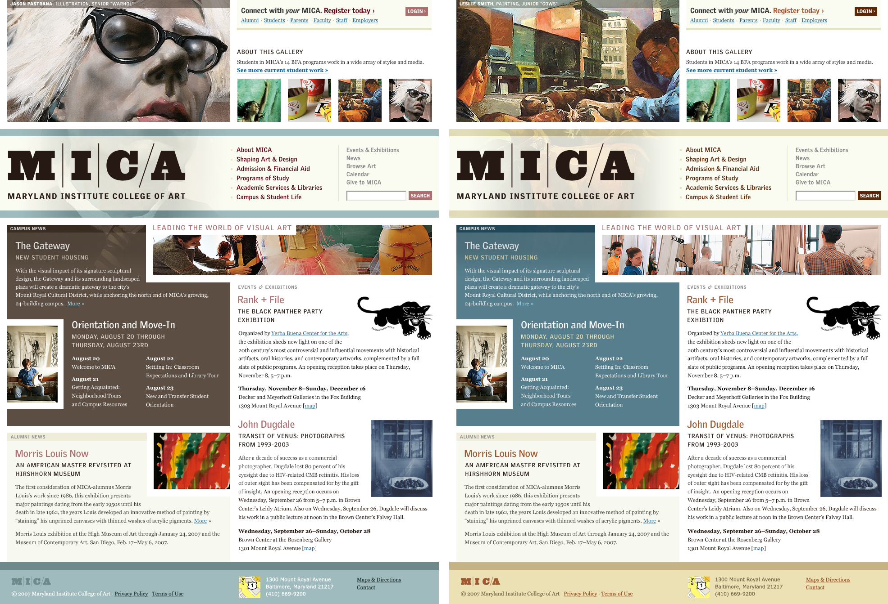

It wasn’t hard to see what differentiated MICA from the average art college. The mix of modern and classic architecture on campus (I’m told the visual texture of which was Abbott Miller’s inspiration for MICA’s bold, new logo), an atmosphere and facilities created for maximum creative freedom, the annual mustache party, the list goes on.
But what stood out to me the most was the artwork. The massive amount of talent at this school was something I thought other schools could not easily compete with. So I started with a big piece of student artwork and designed the concept around that. Then, figuring the more showcased art the better, I conceptualized a bit of functionality that allowed visitors to navigate through four pieces via thumbnails at the top right. When a new piece is selected, not only does the large image change, but the color scheme of the home page and the entire site changes to match it.
The amazing, original development crew at Happy Cog made this work, much to my delight and amazement: Dan Mall, Jenn Lukas & Mark Huot. And the incredible Jason Santa Maria fleshed out the secondary page designs.
{kind=link}